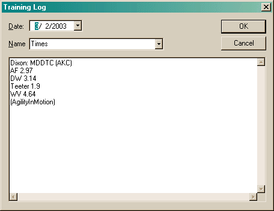

The Training Log properties are very simple and should be self-explanatory.

The Name and SubName fields list all previously created names. You can also type anything you want. These are used to filter the view.
You can press the Enter key to insert blank lines in the notes. When displayed in the main view, all information is flattened into a single line.